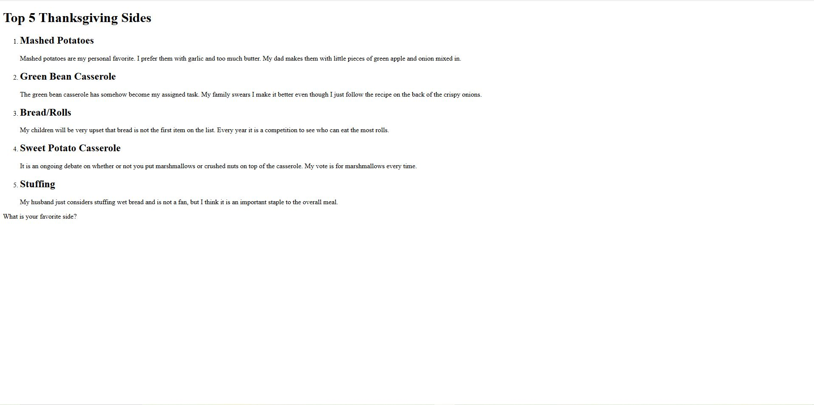

My Completed Assignments
This is a screenshot of a completed index page and a extra credit assignment submisison.
Structuring a Page
Assignment 01
I created a HTML page that sturctured a list of items.

Web Inspiration
Assignment 02
I collected 3 websites that served as inspirations for this site.
-
Website 1:
https://www.criticaldanger.com/
This website is being used as inspiration for what NOT to do. It is very hard to read, the design choices don't make logical sense, and the color palette makes everything blend together.
-
Website 2:
https://www.fundamentalkaos.com/
I really like the color palette for this site and how it primarily uses neutrals with one main standout color.
-
Website 3:
https://www.sandrafigueras.com/
I like how this website makes it very clear what the creator does and incorporates elements of her work without overtaking the site or making it feel childish.